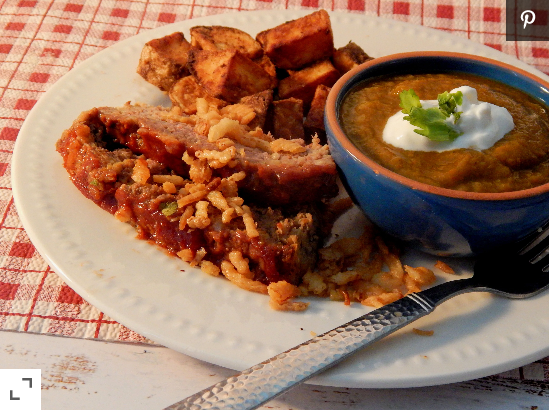

French Onion Meatloaf

Sauteed chicken tenders get a flavor boost from fresh lemon and thyme. Great as a main meal or as a salad topper.
Ingredients
- cooking spray
- 1/2 cup ketchup
- 1/2 cup brown sugar
- 1 1/2 pounds ground beef
- 3/4 cup French-fried onions
- 3/4 cup bread crumbs
- 2 large eggs
- 1/2 cup sour cream
- ...
Steps
- Preheat the oven to 350 degrees F (175 degrees C).
Spray a 9x5-inch loaf pan with cooking spray; spread ketchup and brown sugar over the bottom.
- Combine beef, French-fried onions, bread crumbs, eggs, sour cream, milk, soup mix, garlic, salt, pepper, and ginger in a large bowl.
Mix well and shape into a loaf over the ketchup and brown sugar.
- Bake in the preheated oven until no longer pink in the center, about 1 hour.
An instant-read thermometer inserted into the center should read at least 160 degrees F (70 degrees C).